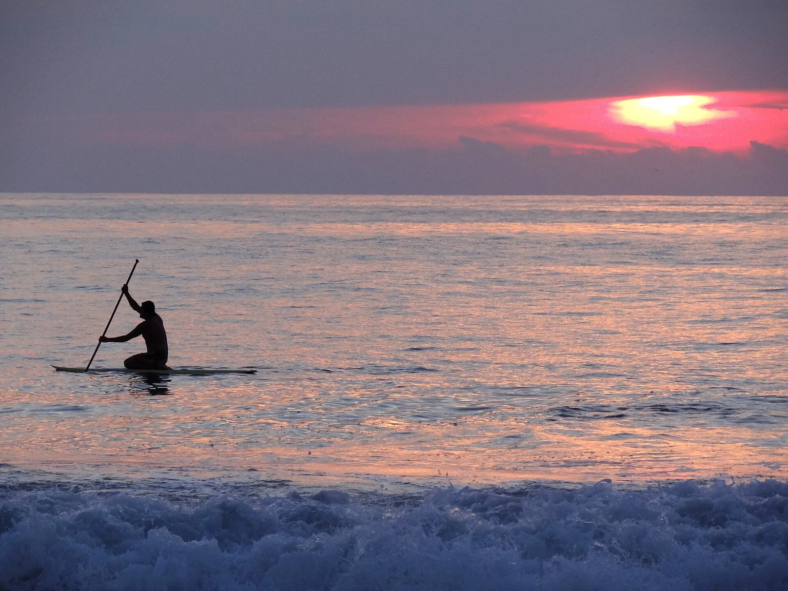

Oaxaca, Mexico
Punta Pájaros
Terrestre sits outside central Puerto Escondido, with passive cooling and private-pool villas close to the Casa Wabi arts landscape.
Oaxaca, Mexico
Two architectural stays near Puerto Escondido, each with a different relationship to the beach and the town.
Your preferences. Thoughtful options. Personal attention throughout.

Oaxaca, Mexico
Terrestre sits outside central Puerto Escondido, with passive cooling and private-pool villas close to the Casa Wabi arts landscape.
Oaxaca, Mexico
Casa TO is a small garden-and-water world a few blocks from the beach, with La Punta’s neighbourhood close by.
A few considered examples. Your personal selection extends beyond these pages, with stays and privileges chosen around your preferences.
Punta Pájaros area, near Puerto Escondido, Oaxaca, Mexico
Alberto Kalach’s naturally cooled villas make architecture and the sun’s rhythm central to the stay.
Who it suits
Architecture enthusiasts comfortable with open-air living and natural cooling.
Begin before the strongest sun, moving between the garden and the open-air parts of your villa. A visit around the Punta Pájaros arts landscape can shape the morning, with access arranged for the places you want to see. Later, return to the private pool and the changing temperature of the house. The bathing spaces offer another way to slow down before dinner. This is a stay for enjoying air, shade and material, rather than expecting the sealed, evenly cooled interiors of a conventional beach hotel.
Getting there & getting around
A road transfer and prearranged transport help with off-site visits.
Before choosing
No conventional air conditioning: natural cooling is a meaningful choice. The location is outside Puerto Escondido’s town neighbourhoods.
A different choice
Casa TO places the stay within La Punta’s neighbourhood, with a very different garden-and-water design.
Details checked · 26 Oct 2026
La Punta Zicatela, Puerto Escondido, Oaxaca, Mexico
Nine suites and a sculptural concrete pool make a small architectural retreat close to La Punta’s daily life.
Who it suits
Design-minded couples who want a small base with restaurants within the neighbourhood.
Start with a quiet hour beside the pool, where the concrete openings frame light rather than a sea view. Walk into La Punta for a meal and continue to the beach, keeping the strongest heat in mind. Later, return to the scale of the hotel: nine suites, a garden or terrace and room to slow the day down. Choose dinner for the mood you want, then walk or arrange a short ride back. The beach is part of the neighbourhood, not a private hotel frontage.
Getting there & getting around
Puerto Escondido airport by road; town and arts-coast outings are separate journeys.
Before choosing
A small property five blocks from the beach. Confirm the current guest-age policy and the outdoor layout of your chosen suite.
A different choice
Terrestre offers private-pool villas outside the centre and a more remote coastal rhythm.
Details checked · 26 Oct 2026
| Property / setting | Style / suggested fit | Main reason to choose it | Accommodation | Facilities | Access / transport | Season / practical considerations |
|---|---|---|---|---|---|---|
| Hotel Terrestre Punta Pájaros area, near Puerto Escondido, Oaxaca, Mexico | Architecture-led open-air villas | Alberto Kalach’s naturally cooled villas make architecture and the sun’s rhythm central to the stay. | Fourteen villas have outdoor bathrooms and terraces with private pools. | Fourteen villas have outdoor bathrooms and terraces with private pools. | A road transfer and prearranged transport help with off-site visits. | No conventional air conditioning: natural cooling is a meaningful choice. The location is outside Puerto Escondido’s town neighbourhoods. |
| Casa TO La Punta Zicatela, Puerto Escondido, Oaxaca, Mexico | Small design hotel | Nine suites and a sculptural concrete pool make a small architectural retreat close to La Punta’s daily life. | Garden suites and terrace suites offer different outdoor spaces; terrace suites have an outdoor tub. | The address is five blocks from the beach, not directly on it. | Puerto Escondido airport by road; town and arts-coast outings are separate journeys. | A small property five blocks from the beach. Confirm the current guest-age policy and the outdoor layout of your chosen suite. |
Browse Hotels & Private Stays ↗ · Private villas & group stays ↗
A selection to inspire your next evening. In every destination, we shape a shortlist around you, with further tables, experiences and privileges shared personally with our clients. Tell us your taste; your time is ours to look after.
Explore by cuisine & occasion ↗
One reservation or every evening of your stay. A wider world of possibilities, shared personally and arranged around you.
Tell us when you will be here. We will share occasions and experiences to shape your time around.
Browse Events & Experiences ↗At Punta Pájaros, let the house and the heat determine the morning before setting out for a planned arts visit. At La Punta, a neighbourhood walk and an early dinner can give the day a different shape.
Neither choice should be confused with a conventional air-conditioned beachfront resort. Choose the setting consciously, then leave space for the coast’s slower rhythm.
Our attention continues beyond the reservation. Contact us 24/7 during your stay, including for a change of plan or a spontaneous idea. We explore suitable options and confirm the arrangements you choose.
Tell us which place or property appeals. Approximate dates and an idea are enough to begin.
Begin an EnquiryContact us 24/7. Our team will respond personally; email info@zelrocprive.com whenever it suits you.
A little inspiration—or something already in mind?